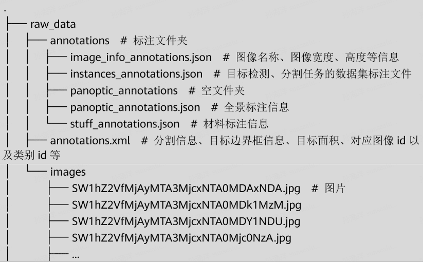
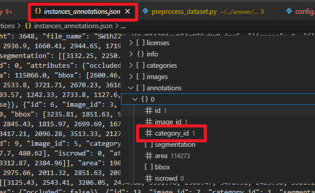
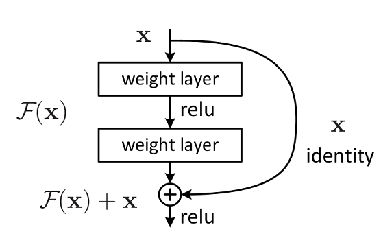
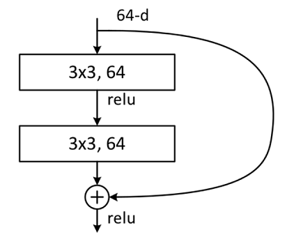
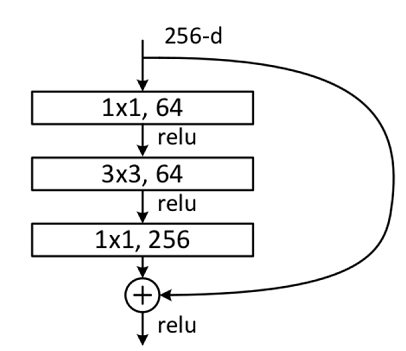
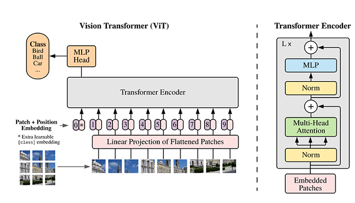
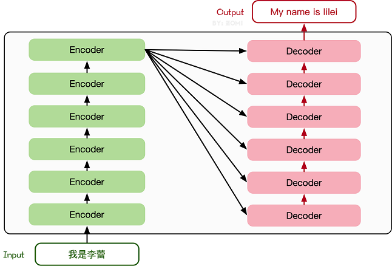
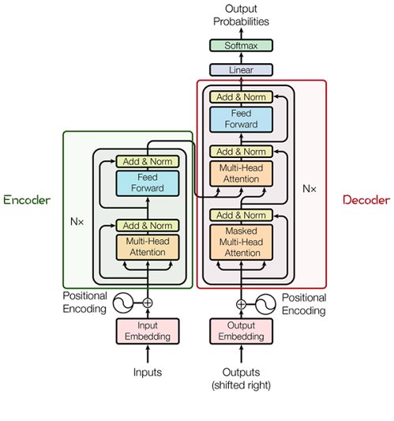

ICT 实验笔记
2024 年国赛试题 MindSpore 部分内容研究
任务一
主要目的是训练一个可以识别开发板上能够标出蓝色区域的模型。
即在 ModelArts 的 Notebook 下购买 Notebook 实例，按照其要求配置环境。
预说明的部分
实验数据集分为原始数据集和预处理后的数据集
- 原始数据集为 raw data，属于 coco 格式数据集，包含图片 image 以及 annotation 文件。原始数据集不能直接使用，需要经过数据预处理。
- 预处理后的数据集为 data，存放预处理后的数据集，包含图片 image 和标签 mask，用于模型训练和推理。
raw_data 的目录结构：

首先是填写 preprocess_dataset.py 的三处空缺。第一处空缺如下：
| #1、填写参数标签
#------------------**************
anno_json = # annotaion json文件路径
coco_cls = # 数据类别80+1类的名字
coco_dir = # 数据集路径
save_dir = # 最终结果保存路径
#--------------------***********************
|
| if __name__ == '__main__':
parser = argparse.ArgumentParser(description='Train the UNet on images and target masks',
formatter_class=argparse.ArgumentDefaultsHelpFormatter)
parser.add_argument('-d', '--data_url', dest='data_url', type=str, default='data/',
help='save data directory')
args = parser.parse_args()
preprocess_dataset(cfg_unet, args.data_url)
|
可以看到程序首先执行到 preprocess_dataset() 函数，如下：
1
2
3
4
5
6
7
8
9
10
11
12
13
14
15
16
17
18
19
20
21 | def preprocess_dataset(cfg, data_dir):
"""Select preprocess function."""
if cfg['dataset'].lower() == "cell_nuclei":
preprocess_cell_nuclei_dataset({"data_dir": data_dir})
elif cfg['dataset'].lower() == "coco":
if 'split' in cfg and cfg['split'] == 1.0:
train_data_path = os.path.join(data_dir, "train")
val_data_path = os.path.join(data_dir, "val")
train_param_dict = {"anno_json": cfg["anno_json"], "coco_classes": cfg["coco_classes"],
"coco_dir": cfg["coco_dir"], "save_dir": train_data_path}
preprocess_coco_dataset(train_param_dict)
val_param_dict = {"anno_json": cfg["val_anno_json"], "coco_classes": cfg["coco_classes"],
"coco_dir": cfg["val_coco_dir"], "save_dir": val_data_path}
preprocess_coco_dataset(val_param_dict)
else:
param_dict = {"anno_json": cfg["anno_json"], "coco_classes": cfg["coco_classes"],
"coco_dir": cfg["coco_dir"], "save_dir": data_dir}
preprocess_coco_dataset(param_dict)
else:
raise ValueError("Not support dataset mode {}".format(cfg['dataset']))
print("========== end preprocess dataset ==========")
|
由于题目说数据集是 coco 格式，所以程序会执行 preprocess_coco_dataset() 会分别以 train_param_dict、val_param_dict、param_dict 作为参数调用。
由此已经可以明确函数 preprocess_coco_dataset() 的参数是 dict() 类型，所以第一个缺失答案如下：
| #1、填写参数标签
#------------------**************
anno_json = param_dict["anno_json"] # JSON格式标注文件路径
coco_cls = param_dict["coco_classes"] # 数据类别80+1类的名字
coco_dir = param_dict["coco_dir"] # 数据集路径
save_dir = param_dict["save_dir"] # 最终结果保存路径
#--------------------***********************
|
第二处空缺如下：
| coco_cls_dict = {} # key为类名，value为索引值
for i, cls in enumerate(coco_cls):
# 2、补全该处代码
#------------------**************
coco_cls_dict[xxx] = # eg:{'backgroud':0, 'person':1',...}
#------------------**************
|
填空 1 处，说 coco_cls 是 数据类别80+1类的名字，遍历变量中，i 逐渐递增，cls (class 的缩写) 是类别名。
需要补全处的注释又说明 key-value 中的 key 应该是名字，而等于的值又是数字，所以应该是 coco_cls_dict[cls] = i。所以第二处缺失答案如下：
| # 2、补全该处代码
#------------------**************
coco_cls_dict[xxx] = # eg:{'backgroud':0, 'person':1',...}
#------------------**************
|
第三处空缺如下：
| #3、补全该处代码
#------------------**************
for instance in anno:
m = annToMask( ) # h*w的array
c = coco_cls_dict[ ] # 最里层为此分割物体属于哪类。class_dict把idx转成类名，cls_dict把类名转回idx
if len(m.shape) < 3:
mask[:, :] += () * ( * ) # 当前属于背景的mask=0，与得到的物体的矩阵m，对应位置上标记为类别c
else:
mask[:, :] += () * ((( * c).astype(np.uint8) # 将3d转成2d,做上面类似的操作
#------------------**************
|
第一个函数 annToMask() 意思即将标注转化为 mask，函数体如下：
1
2
3
4
5
6
7
8
9
10
11
12
13 | def annToMask(ann, height, width):
"""Convert annotation to RLE and then to binary mask."""
from pycocotools import mask as maskHelper
segm = ann['segmentation'] # 前景边界点，对应coco rle格式
if isinstance(segm, list):
rles = maskHelper.frPyObjects(segm, height, width)
rle = maskHelper.merge(rles)
elif isinstance(segm['counts'], list):
rle = maskHelper.frPyObjects(segm, height, width)
else:
rle = ann['segmentation']
m = maskHelper.decode(rle)
return m
|
即函数 annToMask() 输入标注 ann，height 和 width，输出 mask。由于 for 循环里遍历变量为 instance，所以确定第一个参数应该是标注，即 instance。后面的高和宽，可以看到前面几行有变量 h 和 w 的赋值，这里除了填它俩也没什么别的可填的了，因此第 4 行答案是 m = annToMask(instance, h, w)。
第 5 行给出的提示说：class_dict把idx转成类名，cls_dict把类名转回idx。同时，借助代码补全插件 FittenCode，给出的提示为 classs_dict[instance["category_id"]]。猜测我们需要知道 instance 对应 json 文件的键值，打开 raw_data/annotations/instances_annotations.json，如下：

这说明 AI 给出的提示准确无误，即第 5 行答案为：c = coco_cls_dict[instance["category_id"]]。剩下的空缺较难，假设比赛时没有 coco 数据集处理相关的知识，感觉根本无法做出来。至于 src/config.py 下的参数，答案基本是按照 train.py 中的默认值来填的，这就很奇怪...如果你是默认值的话，那为什么还要在配置文件里声明一下？
- 考点 3：完成
unet 网络模型挖空部分，训练并保存权重，以生成权重文件为准
第一处空缺，由于只需要区分是蓝色区域，因此分类类别为 2，这与前面的配置文件中的填写一致。
| def __init__(self, in_channel, n_class=2, feature_scale=2, use_deconv=True, use_bn=True):
|
第二处空缺，可以参照上方函数 NestedUNet 如何对通道数进行缩放。这段代码是为了方便修改输入、输出通道数而设置的，feature.scale 类似于这里 ResidualBlockBase 的 expansion ，因此该空缺填写如下：
| filters = [int(x / self.feature_scale) for x in filters]
|
第三处空缺，可以参照上方函数 NestedUNet 如何定义池化层，再结合给出的模型图片确定卷积窗口尺寸和步长。因此，该处空缺填写如下：
| self.maxpool = nn.MaxPool2d(kernel_size=2, stride=2, pad_mode="same")
|
第四处空缺，可以参照上方函数 NestedUNet 如何定义下采样层：
| self.conv00 = UnetConv2d(self.in_channel, filters[0], self.use_bn)
self.conv10 = UnetConv2d(filters[0], filters[1], self.use_bn)
self.conv20 = UnetConv2d(filters[1], filters[2], self.use_bn)
self.conv30 = UnetConv2d(filters[2], filters[3], self.use_bn)
self.conv40 = UnetConv2d(filters[3], filters[4], self.use_bn)
|
因此，仿照上述代码，第四处空缺填写如下：
| self.conv1 = UnetConv2d(filters[0], filters[1], self.use_bn)
self.conv2 = UnetConv2d(filters[1], filters[2], self.use_bn)
self.conv3 = UnetConv2d(filters[2], filters[3], self.use_bn)
self.conv4 = UnetConv2d(filters[3], filters[4], self.use_bn)
|
第五处空缺，可以参照上方函数 NestedUNet 如何定义上采样层：
1
2
3
4
5
6
7
8
9
10
11
12
13 | self.up_concat01 = UnetUp(filters[1], filters[0], self.use_deconv, 2)
self.up_concat11 = UnetUp(filters[2], filters[1], self.use_deconv, 2)
self.up_concat21 = UnetUp(filters[3], filters[2], self.use_deconv, 2)
self.up_concat31 = UnetUp(filters[4], filters[3], self.use_deconv, 2)
self.up_concat02 = UnetUp(filters[1], filters[0], self.use_deconv, 3)
self.up_concat12 = UnetUp(filters[2], filters[1], self.use_deconv, 3)
self.up_concat22 = UnetUp(filters[3], filters[2], self.use_deconv, 3)
self.up_concat03 = UnetUp(filters[1], filters[0], self.use_deconv, 4)
self.up_concat13 = UnetUp(filters[2], filters[1], self.use_deconv, 4)
self.up_concat04 = UnetUp(filters[1], filters[0], self.use_deconv, 5)
|
因此，仿照上述代码，第五处空缺填写如下：
| self.up_concat2 = UnetUp(filters[2], filters[1], self.use_deconv, 2)
self.up_concat3 = UnetUp(filters[3], filters[2], self.use_deconv, 2)
self.up_concat4 = UnetUp(filters[4], filters[3], self.use_deconv, 2)
|
这里为什么只到 4？因为在下方的 contruct() 函数中，是先从 up4 开始的。
第六处空缺，可以参照上方函数 NestedUNet 如何定义 contrusct() 函数：
1
2
3
4
5
6
7
8
9
10
11
12
13
14
15
16
17
18
19
20
21
22
23
24 | x00 = self.conv00(inputs) # channel = filters[0]
x10 = self.conv10(self.maxpool(x00)) # channel = filters[1]
x20 = self.conv20(self.maxpool(x10)) # channel = filters[2]
x30 = self.conv30(self.maxpool(x20)) # channel = filters[3]
x40 = self.conv40(self.maxpool(x30)) # channel = filters[4]
x01 = self.up_concat01(x10, x00) # channel = filters[0]
x11 = self.up_concat11(x20, x10) # channel = filters[1]
x21 = self.up_concat21(x30, x20) # channel = filters[2]
x31 = self.up_concat31(x40, x30) # channel = filters[3]
x02 = self.up_concat02(x11, x00, x01) # channel = filters[0]
x12 = self.up_concat12(x21, x10, x11) # channel = filters[1]
x22 = self.up_concat22(x31, x20, x21) # channel = filters[2]
x03 = self.up_concat03(x12, x00, x01, x02) # channel = filters[0]
x13 = self.up_concat13(x22, x10, x11, x12) # channel = filters[1]
x04 = self.up_concat04(x13, x00, x01, x02, x03) # channel = filters[0]
final1 = self.final1(x01)
final2 = self.final2(x02)
final3 = self.final3(x03)
final4 = self.final4(x04)
|
因此，仿照上述代码，第六处空缺填写如下：
| #/5、请补充填写下面代码中缺失的部分，将上述算子组合成自定义的unet网络（down sample部分）
##-------------********------------
x0 = self.conv0(inputs) # 第一个卷积模块，输入为原始图像inputs，输出为特征图x0
x1 = self.conv1(self.maxpool(x0)) # 第二个卷积模块，特征图x0需经过最大池化和卷积运算得到x1
x2 = self.conv2(self.maxpool(x1)) # 第三个卷积模块，特征图x1需经过最大池化和卷积运算得到x2
x3 = self.conv3(self.maxpool(x2)) # 第四个卷积模块，特征图x2需经过最大池化和卷积运算得到x3
x4 = self.conv4(self.maxpool(x3)) # 第五个卷积模块，特征图x3需经过最大池化和卷积运算得到x4
##-------------********------------
|
接下来补充 train.py 的代码，这部分属于基本功了，第一处空缺很简单：
| context.set_context(mode=context.PYNATIVE_MODE, device_target="Ascend", device_id=device_id)
|
这里至少是可以写出 context.PYNATIVE_MODE 的，然后补全工具会因为上面设置了 device，自动补全出 device_id。至于 device 则不甚影响此次实验运行，属于无所谓的参数。
接下来定义优化器，上方已经指明要使用 Adam 优化器，也属于基础操作，多敲过几个网络肯定是会的：
| optimizer = nn.Adam(params=net.trainable_params(), learning_rate=lr, weight_decay=cfg['weight_decay'], loss_scale=cfg['loss_scale'])
|
接下来补全遍历的 for 函数。由于是从 0 开始取值的，打印的时候应该设置 t+1；train_loop 有三个参数，分别是 model、dataset、loss_f、optimizer，由于其均已经在代码中定义，直接使用补全插件就可以得到答案；test_loop 也类似，只不过没有 optimizer 参数。
| for t in range(int(epochs / repeat)):
print(f"Epoch {t+1}\n-------------------------------")
train_loop(model=net, dataset=train_dataset, loss_fn=criterion, optimizer=optimizer)
test_loop(model=net, dataset=valid_dataset, loss_fn=criterion)
print("Done!")
|
接下来的空更简单，无需赘述：
| mindspore.save_checkpoint(net, 'best.ckpt')
|
下面的空和定义 optimizer 类似，也是属于每次必定义的，多敲几个网络就可以记住：
| grad_fn = ops.value_and_grad(forward_fn, None, has_aux=True)
|
同上，必定义的：
| def train_step(data, label):
(loss, _), grads = grad_fn(data, label)
loss = optimizer(data, optimizer(data))
return loss
|
最后一处补全，这是一个 test 函数。这个函数是否补全并不影响训练，如果实在无法补全也可以直接在顶部 return。这里也是需要多敲几遍网络才能知道，再加上补全提示，就比较容易写出来：
| num_batches = dataset.get_dataset_size()
model.set_train(False)
test_loss = 0
for data, label in dataset.create_tuple_iterator():
pred = model(data)
test_loss += loss_fn(pred, label).asnumpy()
test_loss /= num_batches
print(f"Test: \n Avg loss: {test_loss:>8f} \n")
|
实践案例
计算机视觉
ResNet 50 图像分类
ReNet 主要解决的问题：减轻网络层数增加时，模型的退化问题。大致结构如下：

ResNet 有两种网络结构，一种是 Building Block，一种是 Bottleneck Block。Building Block 大致结构如下：

Bottleneck Block 大致结构如下：

Transformer 是自然语言处理模型的发展结晶，ViT 则是自然语言处理和计算机视觉两个领域的结晶。在不依赖卷积操作的情况下，仍能达到较好的效果。
ViT 的主体结构：

先解释 Transformer 的基本原理。下图中的网络结构是由 Transformer 编码器和解码器组成的：

其中的编码器和解码器详细结构如下：

这其中最重要的就是 Multi-Head Attention，该结构基于自注意力机制，是多个 Self-Attention 的并行组成。理解 Self-Attention 就抓住了 Transformer 的核心。
Self-Attention 的核心内容是为输入向量的每个单词学习一个权重。